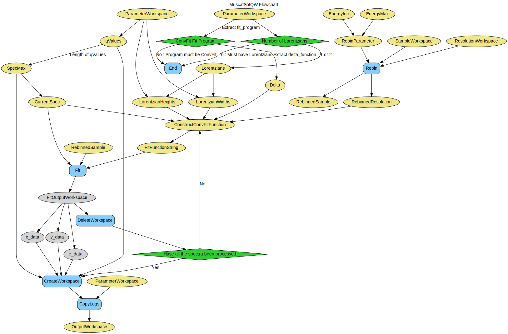

\(\renewcommand\AA{\unicode{x212B}}\)
MuscatSofQW v1¶
{kind=link}
MuscatSofQW dialog.¶
Summary¶
Calculates an S(Q, w) from fitted parameters for use in Muscat.
Properties¶
Name |
Direction |
Type |
Default |
Description |
|---|---|---|---|---|
SampleWorkspace |
Input |
Mandatory |
Name for the input Sample workspace. |
|
ResolutionWorkspace |
Input |
Mandatory |
Name for the input Resolution workspace. |
|
ParameterWorkspace |
Input |
Mandatory |
Name for the input Parameters workspace. |
|
EnergyMax |
Input |
number |
0.5 |
Energy maximum |
EnergyInc |
Input |
number |
0.005 |
Energy increment |
OutputWorkspace |
Output |
Mandatory |
Output workspace in S(Q, w) |
Description¶
This algorithm calculates an S(Q, w) from the fitted results of a ConvFit: one or two Lorentzians. The Q, w range is that for the input _red workspace. A resolution _res is also needed for the elastic/delta-function peak.
The object is to create a S(Q, w) with an energy range greater than that of the measured Q, w to provide a better calculation for multiple scattering.
The ParameterWorkspace workspace must contain the following sample logs present when using ConvFit to fit either one or two Lorentzians:
program=”ConvFit”
‘lorenztians’
Workflow¶
Usage¶
Example - MuscatSofQW
sample = Load('irs26176_graphite002_red.nxs')
resolution = Load('irs26173_graphite002_res.nxs')
parameters = Load('irs26176_graphite002_conv_1LFixF_s0_to_9_Result.nxs')
sqw = MuscatSofQW(SampleWorkspace=sample,
ResolutionWorkspace=resolution,
ParameterWorkspace=parameters)
print('S(Q, w) workspace is intensity as a function of {0} and {1}'.format(
sqw.getAxis(0).getUnit().unitID(),
sqw.getAxis(1).getUnit().unitID()))
Output:
S(Q, w) workspace is intensity as a function of Energy and MomentumTransfer
Categories: AlgorithmIndex | Workflow\MIDAS
Source¶
Python: MuscatSofQW.py